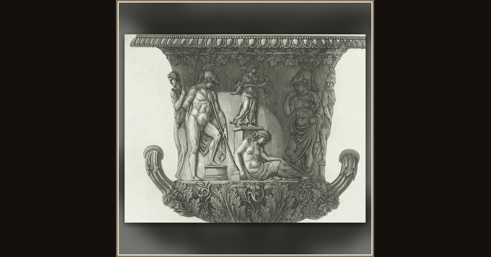

Vaas met het offer van Iphigenia
Giovanni Battista Piranesi · 1778 · rijksmuseum
Piranesi depicts figures in relief on a large vase, including a seated woman beneath a standing figure; the recorded subject is Iphigenia's sacrifice, which she orders to begin (1470) Explore its place in Euripides's Plays, Iphigenia in Aulis, line 1510.